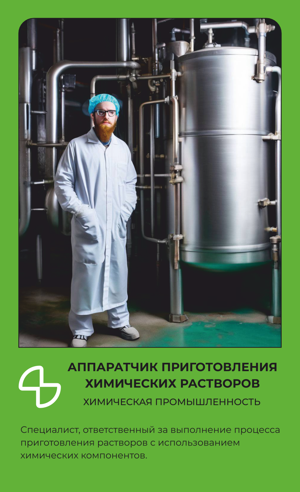

ХИМИЧЕСКАЯ
Аппаратчик приготовления химических растворов
Смешивает химические растворы по точной рецептуре.
Основной вид деятельности
Специалист, ответственный за выполнение процесса приготовления растворов с использованием химических компонентов.
Что делает на рабочем месте
Аппаратчик приготовления химических растворов загружает сырьё и химические компоненты в аппарат и по рецептуре точно дозирует каждый — от растворителя до концентрированного реагента, — потому что даже небольшое отклонение меняет свойства готового раствора. Подаёт растворитель в аппарат, запускает перемешивание и следит, чтобы процесс шёл по заданным технологическим параметрам — температуре, времени, порядку загрузки. Периодически отбирает пробы готового раствора и проверяет его консистенцию и концентрацию, сверяя с требованиями стандарта. Обслуживает и чистит оборудование, включая паровой стерилизатор, а при необходимости выполняет его мелкий ремонт. Готовые растворы передаёт на следующий этап производства или на склад, сопровождая документацией с указанием объёмов и параметров. Работает с агрессивной химией, поэтому носит костюм для защиты от кислот и щелочей, резиновые сапоги с защитным подноском и средство защиты органов дыхания — фильтрующее или изолирующее, в зависимости от того, с чем имеет дело.
Что производит
Химический раствор точной концентрации, приготовленный по рецептуре для дальнейшего производства.
Оборудование и инструменты
Спецодежда
Костюм для защиты от растворов кислот и щелочей
Комбинезон для защиты от токсичных веществ и пыли из нетканых материалов
Белье нательное
Спецобувь
Сапоги резиновые с защитным подноском
СИЗ
Перчатки с полимерным покрытием
Перчатки для защиты от растворов кислот и щелочей
Очки защитные
Средство индивидуальной защиты органов дыхания фильтрующее или изолирующее
Где учиться
Это официальное название и номер специальности в колледже или вузе — он понадобится при поступлении.
Ещё варианты, куда можно поступить на эту профессию — подойдёт любой один, учиться сразу на все не нужно:
Где работать
Похожие профессии
Данные по профессии «Аппаратчик приготовления химических растворов», отрасль «Химическая». Зарплата — оценочная вилка по региону.